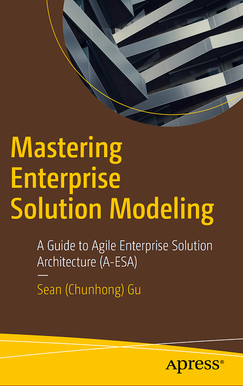

|
Mastering Enterprise Solution Architecture - A Guide to Agile Enterprise Solution Architecture (A-ESA) By Sean Gu |
|
|
 |
Purchase Links: |
ABOUT THE AUTHOR
As part of the IT Architect Certification Board and a chief IT Architect instructor at IBM GCG, he has facilitated thousands of architects and technical leaders in China, the Asia-Pacific, the USA and Europe, and has mentored top-level executive architects for their career advancement.
Sean, graduated from the University of Chicago, holds Master's degrees
in Physical Science, Systems Analysis, and Business Administration. He
has a wide array of interests including swimming, hiking, calligraphy,
and Chinese zither.
Agile ESA Site: a-esa.com
Contact: contact@a-esa.com
|
|